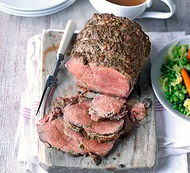

Beef

What is beef?
The classic choice of meat for a British Sunday roast. Beef is full of flavour, as well as being a good source of high-quality protein, iron and B vitamins. But it's not just a one-dish ingredient – the wide range of cuts available, from expensive sirloin steak to the much more affordable brisket, mean it's pretty versatile.
British-reared breeds, such as Aberdeen Angus, Longhorn and Hereford have traditionally been considered to be among the best beef in the world, but the reputation of other premium breeds such as Wagyu, which originated in Japan, are increasingly on the rise.
How to prepare beef
If desired, certain cuts of beef can be marinated to add flavour and moisture and to tenderise a little further. Alternatively, cuts such as steaks and fillets can be pounded with a meat mallet or rolling pin to break down the fibres, which will produce a more tender meat; cover the beef with parchment on both sides first, and try to keep the meat the same thickness all the way along, so that it cooks evenly.Before it goes in the oven, beef should be at room temperature, so take it out of the fridge 30-60 mins before cooking. Keep it covered, in a cool place.
How to cook beef
Topside is a really versatile cut that can be slow cooked, or flash cooked and serve rare.Brisket also needs to be cooked for a long time to break down the fibres until shreddable and tender.
Another common way to cook beef is steak, which has many different flavourings, cuts and cooking timings
How to store beef
Pre-packed beef in airtight packaging, as well as vacuum-packed beef, should be stored in its packaging at the bottom of the fridge. On the day of using, remove all packaging, pat with kitchen paper, and keep uncovered on a plate in the fridge. This will allow the beef to air dry and you'll get a better crust when searing. You can also season the beef now as a 'dry-brine', before cooking to season the beef, and retain juiciness when cooked.Make sure beef doesn't touch any cooked foods or anything that will be eaten raw. Any cuts that are bought loose will keep for up to 2-4 days. Larger cuts for roasting will keep up to 4 days (check all use by dates). Minced beef should be eaten within a day of purchase or frozen. For vacuum-packed meat, follow the use-by date on the packaging.